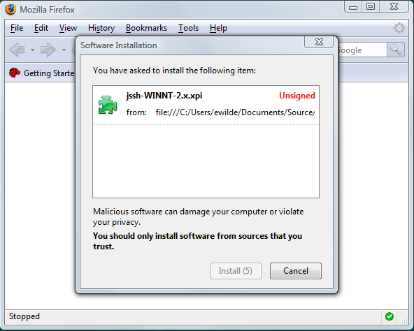

WatiN Firefox Release Candidate
This article explains the basic principles for creating and running WatiN tests on both Internet Explorer and Firefox.
Index
- Download and install WatiN Firefox Release Candidate.
- Creating a simple test that runs on both Internet Explorer and FireFox
- Creating a generic mechanism for executing tests that run on both Internet Explorer and FireFox
- Converting an existing WatiN test to run on both Internet Explorer and FireFox
Download and install WatiN Firefox Release Candidate
- Make sure you have Firefox version 2.0 or higher installed.
- Next you should download the WatiN Firefox release candidate and unzip it into an appropriate directory Assuming you have unzipped the release to c:\Program Files\WatiNFirefox\
- A plugin jssh is used by WatiN to automate Firefox to carry out tests. To install the plugin:
- Open FireFox
- Click File -> Open File
- Navigate to your WatiN installation folder i.e. c:\Program Files\WatiNFirefox\ and open the file jssh-WINNT-2.x.xpi 
Creating a test that runs on both Internet Explorer and FireFox
Please look at the UnitTest sample in the samples directory of WatiNFirefox for more detailed code examples
[Test]
public void SearchForWatiNOnGoogleVerbose()
{
using (IBrowser ie = BrowserFactory.Create(BrowserType.InternetExplorer))
{
ie.GoTo("http://www.google.com");
ie.TextField(Find.ByName("q")).Value = "WatiN";
ie.Button(Find.ByName("btnG")).Click();
Assert.IsTrue(ie.ContainsText("WatiN"));
}
using (IBrowser firefox = BrowserFactory.Create(BrowserType.FireFox))
{
firefox.GoTo("http://www.google.com");
firefox.TextField(Find.ByName("q")).Value = "WatiN";
firefox.Button(Find.ByName("btnG")).Click();
Assert.IsTrue(firefox.ContainsText("WatiN"));
}
}
Generic mechanism for executing tests.
The test below executes a single test once for each browser type using a delegate mechanism. This mechanism isn't shown here but can be found in the BaseTest.cs sample class located in the samples folder:
/// <summary>
/// Searches for WatiN on google using both Internet Explorer and Firefox.
/// </summary>
[Test]
public void SearchForWatiNOnGoogleUsingBaseTest()
{
// Call ExecuteTest in the base class, the base class handles creating and disposing
// of browser instances, and will call the passed in delegate
// SearchForWatiNOnGoogleUsingBaseTest(IBrowser browser) once for each type of
// browser supported by WatiN (Internet Explorer and Firefox at the moment).
base.ExecuteTest(SearchForWatiNOnGoogleUsingBaseTest);
}
/// <summary>
/// Searches for WatiN on google using the passed in <paramref name="browser"/>.
/// </summary>
/// <param name="browser">The browser.</param>
private void SearchForWatiNOnGoogleUsingBaseTest(IBrowser browser)
{
GoTo("http://www.google.com", browser);
browser.TextField(Find.ByName("q")).Value = "WatiN";
browser.Button(Find.ByName("btnG")).Click();
Assert.IsTrue(browser.ContainsText("WatiN"));
}